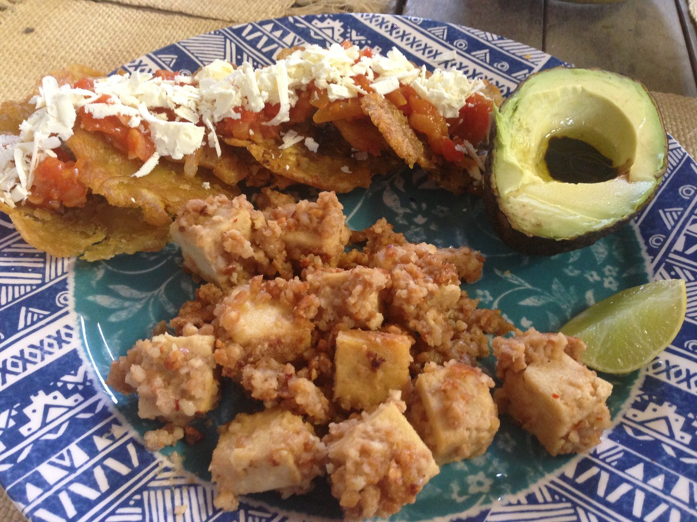

Tofu crujiente con patacones y aguacate
Ingredients
2×
- 200 g de tofu firme
- 50 g de cacahuetes picados
- sal
- aceite
- 1 plátano verde
- salsa de tomate
- queso fresco
- 1 aguacate
- 1 lima

Preparación
Paso 1
Cortar 200 g de tofu firme en dados, rebozarlos en 50 g de cacahuetes picados con sal y dorarlos en la sartén con aceite.
Paso 2
Cortar 1 plátano verde en trozos gruesos, freír, aplastar y volver a freír (patacones).
Paso 3
Cubrir los patacones con salsa de tomate y queso fresco desmigado.
Paso 4
Servir con el tofu, 1 aguacate partido y 1 lima en gajos.